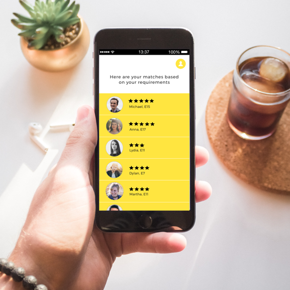

Chippin
Client Project
Chippin is a payments platform that allows users to split the cost of a product. Our two-weeks sprint included the re-design of the landing page, where most users felt confused and dropped off.
Nuffield Health App
Conceptual Design
Nuffield Health’s new app allows users to book appointments with the doctor, and also helps the user by prompting them to make small lifestyle changes through gamification and a rewards system.

The Nanny App
Conceptual Design
The Nanny App is an online platform that allows parents and nannies to meet on the app and arrange childcare services. The current design focuses on the parents’ flow.